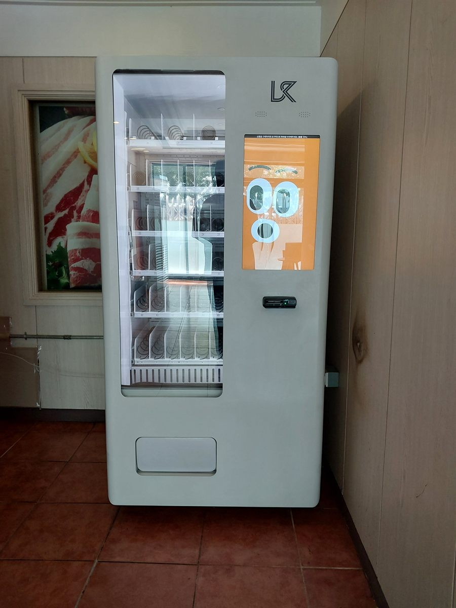

식당에 자판기를 놓을 때 가장 많이 듣는 말이 "홀에서 파는데 굳이 필요하냐"입니다. 맞는 말씀이지만, 자판기가 노리는 손님은 이미 자리에 앉은 손님이 아니라 아직 앉지 못한 손님입니다. 저녁 시간대에 줄이 생기는 가게라면 문 앞이나 복도에서 10분, 20분씩 서 있는 사람이 늘 있습니다. 그 사람들은 홀 주문을 할 수 없고, 직원을 부르기도 애매합니다. 이번 현장은 그 구간이 또렷하게 보이는 곳이었습니다.
자리를 고를 때 먼저 지운 후보는 주방 쪽 통로였습니다. 눈에 안 띄어 깔끔하다는 이유로 제안이 나왔는데, 식당 주방 통로는 직원이 쟁반을 들고 지나는 길이라 폭을 한 뼘이라도 줄이면 안 됩니다. 대신 잡은 곳이 사진에 보이는 홀로 들어가는 문 옆 벽면입니다. 기다리는 손님이 그대로 바라보는 면이고, 뒤쪽으로 사람이 지나갈 폭도 남습니다. 그다음 본 것은 전기였습니다. 식당은 냉장고·제빙기·환풍기가 같은 회로에 몰려 있는 경우가 많아, 여기에 냉장 압축기를 더하면 저녁 피크에 차단기가 내려갈 수 있습니다. 분전반을 열어 홀 조명 쪽의 여유 있는 회로를 따로 잡았습니다. 마지막은 수평입니다. 바닥이 타일이라 평평해 보여도 식당 바닥은 배수 때문에 미세한 기울기를 주는 곳이 많습니다. 다리를 하나씩 돌려 잡고, 물청소 뒤에 다시 보기로 했습니다.
강남 고깃집 대기 공간에 맞는 구성
기계는 냉장 음료 중심의 자판기 한 대로 잡았습니다. 기다리는 손님이 사는 것은 지금 바로 마실 수 있는 것이지, 들고 들어가 먹을 간식이 아닙니다. 그래서 생수와 탄산, 이온음료, 캔커피 칸을 넉넉히 두고 과자류는 최소한만 넣었습니다. 봉지 과자를 많이 넣으면 홀에서 먹다가 치우는 일이 생기고, 식당 입장에서는 그게 더 번거롭습니다. 아이를 데리고 온 가족 손님이 많은 자리라 어린이가 마실 작은 용량 음료를 한 줄 따로 잡아 두었습니다.
결제는 카드와 삼성페이·카카오페이·네이버페이를 받게 했습니다. 현금함은 넣지 않았습니다. 식당은 마감 때 정산할 것이 이미 많은데 자판기 현금까지 세면 일이 하나 더 늘어납니다. 카드만 받으면 매출이 앱에 그대로 쌓여 월말에 숫자만 보면 됩니다. 재고는 원격으로 어떤 칸이 비었는지 확인하고 영업 전 시간에 채웁니다. 식당은 사람이 상주하니 무인매장처럼 순회할 필요는 없지만, 바쁜 저녁에 품절 칸을 눈치채기 어렵습니다. 그래서 설치 당일에 사장님 휴대폰으로 품절 알림이 제대로 오는지 같이 확인했습니다.
식당 자판기, 좋은 점과 어려운 점
좋은 점은 직원 일이 늘지 않는다는 것입니다. 기다리는 손님이 물 한 병을 찾을 때마다 홀 직원이 움직이던 일이 없어집니다. 피크 시간에 손이 하나 비는 효과가 생각보다 큽니다. 둘째는 대기 시간의 체감이 줄어든다는 점입니다. 손에 음료가 들려 있으면 같은 15분도 덜 길게 느껴집니다. 셋째는 영업시간 밖에도 돈이 된다는 것입니다. 브레이크 타임이나 마감 뒤에도 기계는 그대로 서 있고, 건물 안에서 오가는 사람이 있으면 그 시간에도 팔립니다. 넷째는 자리를 거의 안 먹는다는 점입니다. 테이블을 한 자리 빼지 않고 벽 한 칸만 쓰면 됩니다.
어려운 점도 그대로 적겠습니다. 첫째는 홀 메뉴와 겹치는 문제입니다. 홀에서 파는 음료를 자판기에도 똑같이 넣으면 가격이 다를 때 손님이 묻습니다. 품목을 겹치지 않게 나누거나 가격을 맞추셔야 합니다. 둘째는 냄새와 기름입니다. 고깃집은 공기 중에 기름기가 돌아 기계 표면과 환기구에 먼지가 더 잘 붙습니다. 한 달에 한 번은 겉면과 흡배기 쪽을 닦아 주셔야 합니다. 셋째는 소음입니다. 냉장 압축기가 돌 때 소리가 나는데, 홀 안쪽이면 신경 쓰이지만 대기 공간이라면 거의 묻힙니다. 자리를 홀 안으로 넣자는 이야기가 나와도 이 이유로 말리는 편입니다. 넷째는 물청소입니다. 식당 바닥은 물을 뿌려 닦는 곳이 많은데 기계 다리와 전원 플러그에 물이 닿으면 안 됩니다. 플러그 위치를 바닥에서 띄워 잡고, 청소하실 때 기계 아래쪽은 밀대로만 닦아 달라고 안내드렸습니다.
강남 무인매장, 이런 자리가 잘 됩니다
강남은 서울에서 낮과 밤의 사람 수가 가장 크게 달라지는 지역 가운데 하나입니다. 그래서 자판기 자리의 성격도 몇 갈래로 나뉩니다. 첫째는 테헤란로를 따라 늘어선 오피스 빌딩입니다. 역삼동·삼성동 일대는 사무실이 밀집해 있어 건물 안 휴게 공간과 지하 상가가 점심시간과 퇴근 전에 몰립니다. 둘째는 강남역과 신논현역 사이의 식음료 상권입니다. 이번 현장처럼 저녁에 줄이 생기는 가게가 많아 대기 공간을 쓰는 방식이 잘 맞습니다. 셋째는 대치동 학원가입니다. 학원 건물과 그 사이 상가는 학생들이 수업 사이에 잠깐 들르는 흐름이 뚜렷해 음료 회전이 빠른 편입니다.
그 밖에 문의가 꾸준한 자리는 논현동·신사동 가로수길 주변의 소형 매장, 청담동과 압구정동의 뷰티·의류 매장 대기 공간, 코엑스와 선정릉 주변 업무 시설, 도곡동·개포동·일원동의 아파트 단지 상가, 그리고 수서역 쪽으로 이어지는 블록입니다. 강남은 같은 동이라도 대로변이냐 이면도로냐에 따라 유동 인구가 완전히 다릅니다. 그래서 상담 때는 주소보다 그 자리 앞에 사람이 몇 분씩 서 있는지를 먼저 여쭙습니다. 서초구 서초동·양재동과 송파구 잠실 방면은 한 번 나가는 길에 같이 보는 일이 많습니다.
강남 서비스 지역
강남구 — 역삼동 · 삼성동 · 대치동 · 청담동 · 신사동 · 논현동 · 압구정동 · 도곡동 · 개포동 · 일원동 · 수서동 · 세곡동 · 자곡동 · 율현동
역 — 강남역 · 역삼역 · 선릉역 · 삼성역 · 신논현역 · 논현역 · 학동역 · 압구정역 · 압구정로데오역 · 청담역 · 대치역 · 도곡역 · 매봉역 · 한티역 · 개포동역 · 구룡역 · 일원역 · 수서역
주요 시설 — 테헤란로 업무 지구 · 강남대로 상권 · 가로수길 · 코엑스 · 대치동 학원가 · 양재천 · 선정릉 일대
인접 — 서초구(서초동 · 양재동 · 반포동) · 송파구(잠실 · 문정) · 성동구 · 광진구 · 경기 성남 분당 방면
서울 전역(강남 4구 · 도심권 · 서북권 · 서남권 · 동북권)과 경기 성남 · 하남 · 과천까지 같은 조건으로 나갑니다.
강남 무인창업, 이렇게 시작하시면 됩니다
설치비는 받지 않습니다. 자리 확인부터 품목 구성, 기계 반입, 카드 결제 연동, 재고 채우는 방법까지 한 번에 안내해 드립니다. 식당처럼 이미 영업 중인 가게는 문 닫는 시간이나 브레이크 타임에 맞춰 들어가므로 장사를 멈출 일이 없습니다. 견적 전에 확인하는 것은 전기 회로·벽면 폭·반입 경로 세 가지입니다. 강남 일대는 건물이 오래된 이면도로 상가가 많아 엘리베이터가 없거나 계단 폭이 좁은 곳이 있으니, 1층이 아니라면 미리 알려 주시는 편이 좋습니다. 자리 사진 한 장과 대략의 벽면 폭만 보내 주셔도 들어갈지 아닐지는 미리 봐 드립니다.
비용은 구입이 렌탈보다 유리한 편입니다. 렌탈료를 몇 년 내는 것보다 처음에 사 두는 쪽이 총액이 낮게 나오는 경우가 많고, 오래 쓸수록 차이가 벌어집니다. 다만 임차 기간이 짧거나 자리를 옮길 가능성이 있는 가게라면 렌탈을 함께 비교해 보시는 편이 낫습니다. 구성별 36개월 총비용은 구입 vs 렌탈 비교 가이드에 정리해 두었습니다.
강남 무인자판기 설치 상담
세워 둘 자리 사진 한 장만 보내 주셔도 됩니다. 남는 벽과 전기 회로, 반입 경로를 보고 들어갈 수 있는 크기와 대수를 먼저 봐 드린 뒤 견적을 보내 드립니다.
※ 사진은 픽포스가 시공한 설치 사례이며, 글에 적힌 지역의 현장 사진은 아닙니다. 자판기 구성과 품목은 자리와 업종에 따라 달라지며, 영업 중인 매장 설치는 전기 회로 여유와 반입 경로, 통로 폭 확보 조건을 현장에서 먼저 확인합니다. 정확한 금액은 견적서로 안내드립니다.